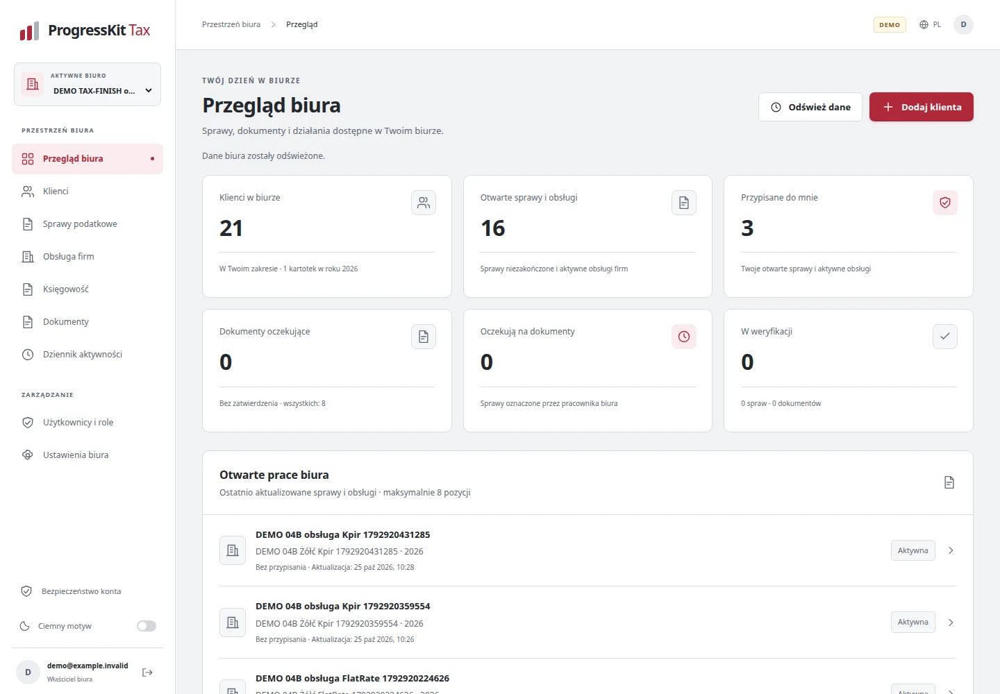
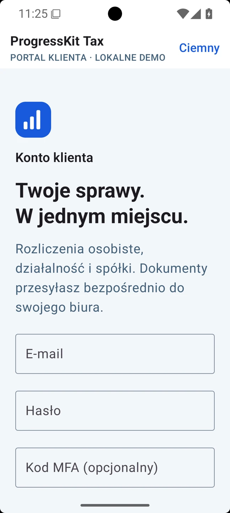
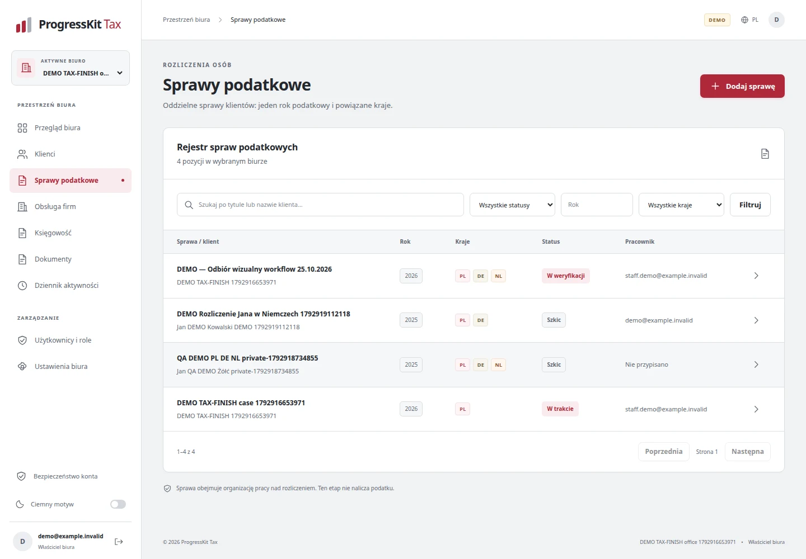
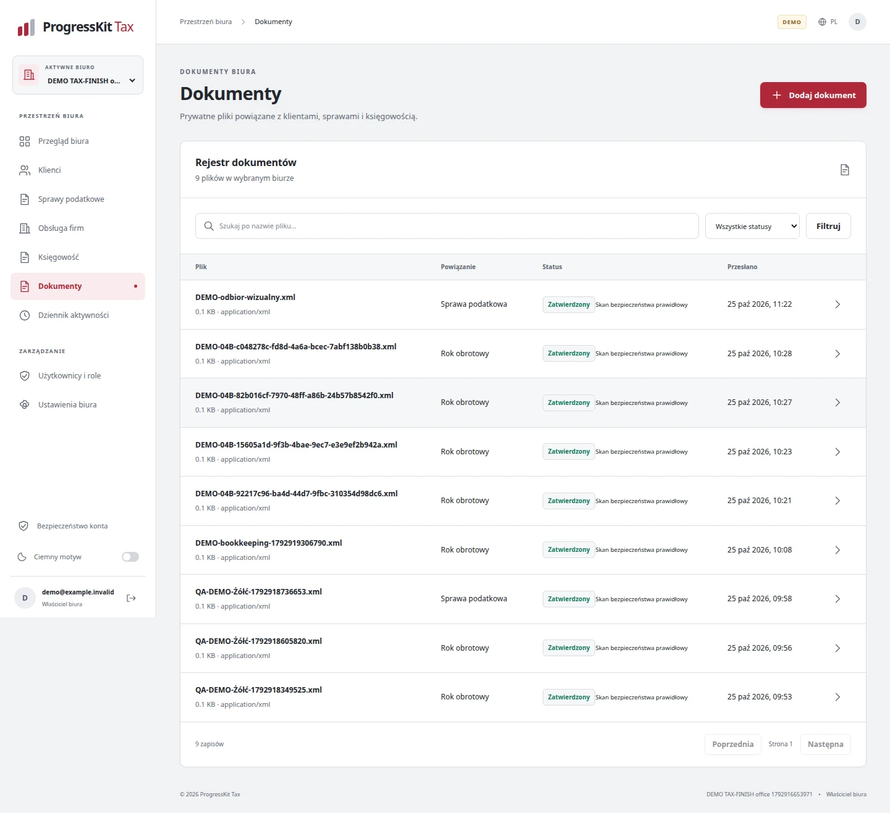
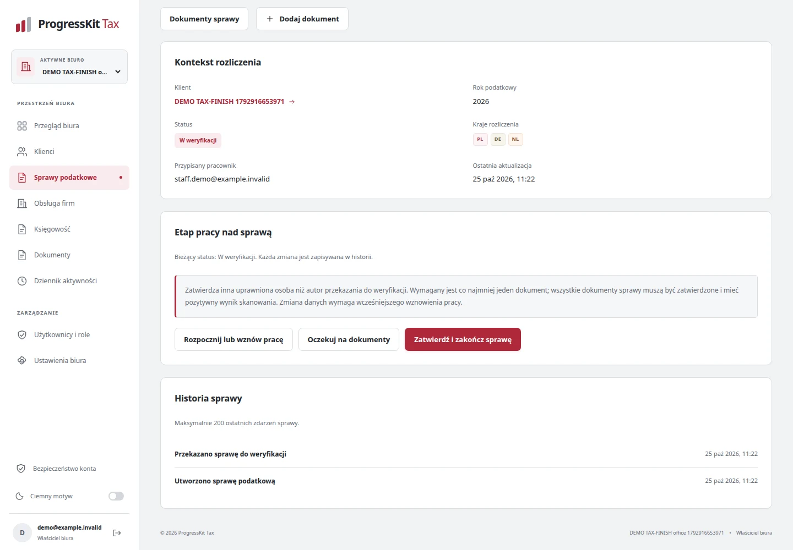

Jeden system / backend, WWW i Android
ProgressKit Tax
Całe biuro.
Jeden obieg pracy.
Klienci, sprawy i dokumenty w przestrzeni Twojego biura.
ProgressKit Tax łączy backend, panel WWW oraz natywną aplikację Android. Wspólne uprawnienia i izolacja biur porządkują pracę od przyjęcia dokumentu do kontrolowanego zatwierdzenia.
Biuro WWW, backend i portal Android
- WWWkokpit biura i obieg spraw
- Androidnatywny klient systemu
- Backendautoryzacja i izolacja biur




Od pierwszego kroku
Jeden spójny przebieg.
- Przyjmij dokument
- Sprawdź bezpieczeństwo
- Powiąż ze sprawą
- Przekaż do kontroli
ProgressKit Tax
Sprawa ma swój kontekst.
Kartoteka klientów, sprawy i obsługi firm są powiązane z biurem, rokiem oraz zakresem pracy. Statusy i przypisania porządkują kolejkę. Wszystkie pokazane rekordy są syntetycznymi danymi DEMO.

ProgressKit Tax
Dokument przechodzi kontrolowany obieg.
Pliki mają kontrolę dostępu, skanowanie, statusy przetwarzania, historię i decyzje review. Skanowanie i kontrola drugiej osoby poprzedzają dopuszczenie do dalszej pracy. To rzeczywisty panel, bez danych klientów.

ProgressKit Tax
Bezpieczeństwo działa pomiędzy ekranami.
Kod obejmuje uwierzytelnianie, MFA, role, izolację biur i audyt operacji. Android oraz WWW korzystają z tego samego backendu. Dostęp nie wynika wyłącznie z ukrycia przycisku w interfejsie.

Bez fikcyjnego interfejsu
Rzeczywisty produkt. Z bliska.
Wybierz ekran, aby obejrzeć go w pełnym rozmiarze. Każdy materiał zachowuje opis środowiska i daty.


Pod powierzchnią
Technologia ma tu swoje zadanie.
Aplikacja i interfejs
C# · Next.js · React · TypeScript · Kotlin · Jetpack Compose · Android Keystore · CSV / PDF
Usługi i komunikacja
.NET 10 · ASP.NET Core Identity · Entity Framework Core
Dane i zapis
PostgreSQL / Npgsql
Bezpieczeństwo i infrastruktura
ClamAV
Potwierdzony zakres, źródła i ograniczenia
Opis projektu
Jeden system dla biura rachunkowego: backend, panel WWW i portal Android. Obejmuje tożsamość i MFA, izolację biur, klientów, sprawy oraz dokumenty; zakres księgowości i bramki produkcyjne pozostają jawnie ograniczone.
Problem i rozwiązanie
Biuro rachunkowe potrzebuje wspólnego obiegu klientów, spraw i dokumentów, z kontrolą dostępu oraz rozdzieleniem danych różnych biur.
ASP.NET Core i PostgreSQL obsługują wspólną domenę, autoryzację oraz dokumenty. Panel WWW służy pracy biura, a klient Kotlin/Android daje portal do tego samego systemu.
Uporządkować pracę biura i wymianę dokumentów z klientem w jednym systemie, z jawną historią operacji i zakresem dostępu.
Platformy i dostępność
Backend API
Rozbudowane moduły obsługi biura, dokumentów i księgowości.
Historyczny pełny backend Release: 981/981 w Dashboard 02; późniejszy 01B wykonał węższe 258 testów bezpieczeństwa. W tym audycie nie uruchamiano testów.
Lokalne buildy i konfiguracje deweloperskie/testowe.
Program jawnie odmawia startu poza Development/Testing; produkcja BLOCKED.
WWW
Działający interfejs biura z kokpitem, klientami, workflow, dokumentami i księgowością.
Dashboard 02: 218 Vitest, build/lint/typecheck, odrębne przebiegi Chrome i Firefox; pełne biegi i delty opisano osobno.
Historyczny lokalny production build Next.js; nie potwierdzono publicznego wdrożenia.
Odbiór produkcyjny i pełny audyt dostępności pozostają odrębne.
Android
Natywny portal klienta Kotlin/Compose, odczyt spraw, dokumenty, upload/download i cykl sesji.
Raport 2026-10-11 dokumentuje 23 unikalne kontrole na fizycznym Redmi Note 14 / Android 16 dla APK 0.4.0-debug; późniejsze buildy/JVM nie są nowym testem telefonu.
Lokalne Debug APK; brak potwierdzonego podpisanego publicznego Release lub Google Play.
Nowszy security checkpoint nie obejmuje fizycznego Androida ani podpisanego Release.
Weryfikacja z datą i środowiskiem
- BLOCKED · 2026-11-09
Production Completion 02E i macierz 141 wymagań
Zapisane dowody produktu; ponownie odczytane podczas audytu
57 DONE; globalny gate nadal BLOCKED. Naprawa panelu i testy komponentów nie zastępują pełnego Browser E2E.
Źródło wyniku - PASS · 2026-10-25
Dashboard 02, pełny backend Release na lokalnym syntetycznym środowisku; oddzielny pełny Vitest · backend
Środowisko opisane w raporcie; szczegółowa konfiguracja nieutrwalona.
981 PASS / 0 FAIL / 0 SKIP. Chrome 14/Firefox 5 to pokrycie z opisanych pełnych biegów i delt; raport nie deklaruje nowych drugich pełnych runów.
Źródło wyniku - PASS · 2026-10-25
Dashboard 02, pełny backend Release na lokalnym syntetycznym środowisku; oddzielny pełny Vitest · frontend
Środowisko opisane w raporcie; szczegółowa konfiguracja nieutrwalona.
218 PASS / 0 FAIL / 0 SKIP. Chrome 14/Firefox 5 to pokrycie z opisanych pełnych biegów i delt; raport nie deklaruje nowych drugich pełnych runów.
Źródło wyniku - PASS · 2026-10-25
Checkpoint 01B, lokalna wąska regresja bezpieczeństwa, Debug/JVM i tooling · backend Security
Środowisko opisane w raporcie; szczegółowa konfiguracja nieutrwalona.
258 PASS / 0 FAIL / 0 SKIP. Nie jest to pełny nowy backend 981 ani pełny frontend 222/222 w jednym reporterze; Pozostają otwarte ustalenia walidacji i zależności; pełna bramka bezpieczeństwa wymaga domknięcia.
Źródło wyniku - PASS · 2026-10-25
Checkpoint 01B, lokalna wąska regresja bezpieczeństwa, Debug/JVM i tooling · android Jvm
Środowisko opisane w raporcie; szczegółowa konfiguracja nieutrwalona.
11 PASS / 0 FAIL / 0 SKIP. Nie jest to pełny nowy backend 981 ani pełny frontend 222/222 w jednym reporterze; Pozostają otwarte ustalenia walidacji i zależności; pełna bramka bezpieczeństwa wymaga domknięcia.
Źródło wyniku - FAIL · 2026-10-25
Checkpoint 01B, lokalna wąska regresja bezpieczeństwa, Debug/JVM i tooling · frontend First Run
Środowisko opisane w raporcie; szczegółowa konfiguracja nieutrwalona.
221 PASS / 1 FAIL / 0 SKIP. Nie jest to pełny nowy backend 981 ani pełny frontend 222/222 w jednym reporterze; Pozostają otwarte ustalenia walidacji i zależności; pełna bramka bezpieczeństwa wymaga domknięcia.
Źródło wyniku - PASS · 2026-10-25
Checkpoint 01B, lokalna wąska regresja bezpieczeństwa, Debug/JVM i tooling · frontend Targeted Retry
Środowisko opisane w raporcie; szczegółowa konfiguracja nieutrwalona.
1 PASS / 0 FAIL / 0 SKIP. Nie jest to pełny nowy backend 981 ani pełny frontend 222/222 w jednym reporterze; Pozostają otwarte ustalenia walidacji i zależności; pełna bramka bezpieczeństwa wymaga domknięcia.
Źródło wyniku - BLOCKED · 2026-10-25
Checkpoint 01B, lokalna wąska regresja bezpieczeństwa, Debug/JVM i tooling · vendor Gate
Środowisko opisane w raporcie; szczegółowa konfiguracja nieutrwalona.
Bramka pozostaje zablokowana. Nie jest to pełny nowy backend 981 ani pełny frontend 222/222 w jednym reporterze; Pozostają otwarte ustalenia walidacji i zależności; pełna bramka bezpieczeństwa wymaga domknięcia.
Źródło wyniku - PASS · 2026-10-11
Fizyczny Redmi Note 14, Android 16/API36, fikcyjne dane, lokalny backend · unique Checks
Środowisko opisane w raporcie; szczegółowa konfiguracja nieutrwalona.
23 PASS w opisanym zestawie. To historyczny checkpoint konkretnego APK; późniejsze buildy z innym SHA nie dziedziczą tego PASS.
Źródło wyniku - NOT RUN · 2026-11-02
Przegląd bieżącego zakresu implementacji i granic dostępności.
Audyt źródeł i dostępnej dokumentacji.
Odczyt źródeł nie zastępuje uruchomienia aplikacji, testów urządzeń ani potwierdzenia produkcji.
Źródło wyniku - NOT RUN · 2026-11-25
Aktualizacja inwentarza i granic gotowości
Lokalny audyt kodu, dokumentacji i istniejących artefaktów
Nie uruchamiano produktu, nowego builda ani urządzenia. Zachowane wyniki mają własną datę i zakres.
Źródło wyniku
Funkcje w katalogu
- Jeden backend dla panelu biura WWW i portalu klienta na Androidzie.
- Tożsamość użytkowników, role oraz istniejące mechanizmy MFA i wymaganego zapisania personelu do MFA.
- Oddzielenie biur i uprawnień do klientów, spraw oraz dokumentów.
- Obsługa klientów i spraw z kontrolą dostępu do powiązanych danych.
- Prywatny magazyn dokumentów, walidacja, skanowanie ClamAV i kontrolowany obieg weryfikacji.
- Wersjonowanie, ślad audytowy i uprawnienia przy zmianach statusu oraz ocenie dokumentu.
- Zaimplementowane, ograniczone scenariusze rozliczeń PIT i workflow JDG/spółki; pełne pokrycie księgowości nie jest deklarowane.
- Rzeczywisty portal Kotlin/Android obejmuje własne logowanie, sesję, obsługę MFA i widoki danych wspólnego systemu.
Architektura
- ASP.NET Core/.NET i PostgreSQL stanowią wspólny backend domeny oraz autoryzacji.
- Panel WWW Next.js/React prezentuje klientów, sprawy, dokumenty i przepływy weryfikacji.
- Kotlin/Android korzysta z tego samego zaplecza przez istniejący portal API.
- Izolacja biur, role, MFA, prywatny magazyn dokumentów i skan ClamAV są odrębnymi kontrolami; każda ma własne granice weryfikacji.
Zakres weryfikacji
- Macierz z 09.11.2026 obejmuje 141 wymagań: 57 DONE, 20 PARTIAL, 40 TODO, 14 BLOCKED, 7 NOT TESTED i 3 NOT APPLICABLE.
- Raport 02E potwierdza naprawę renderowania weryfikacji dokumentu; 9 testów komponentu PASS po zachowaniu wcześniejszego FAIL.
- W 02E nie powtarzano pełnego Browser E2E. Google High i globalny Security Gate pozostają BLOCKED.
Korekty księgowe i obieg pracy wymagają trwałej historii oraz niezależnego zatwierdzenia.
- Diagnoza
- Odczytano moduły ksiąg, ewidencji, dokumentów i workflow oraz oddzielne raporty testów.
- Przyczyna
- Zmiana wpisu i zatwierdzenie pracy obejmują kilka powiązanych operacji.
- Rozwiązanie
- Implementacja łączy transakcje, korekty i storna z wersjonowanym workflow i audytem.
- Weryfikacja
- Historyczne zestawy backendu i frontendu opisują konkretny lokalny zakres; nie odtwarzano ich w audycie portfolio.
- Wynik
- Zaimplementowano spójny techniczny obieg danych. Odbiór księgowy, prawny i produkcyjny pozostaje odrębny.
Źródła katalogu
- ProgressKit Tax: źródła funkcji 01
Odczyt źródeł 02.11.2026: Rejestracja i logowanie, potwierdzanie konta, odzyskiwanie dostępu, kontrola sesji i wieloskładnikowego uwierzytelniania.
- ProgressKit Tax: źródła funkcji 02
Odczyt źródeł 02.11.2026: Model wielu biur z członkostwem i rolami Owner, Manager, Staff, Reviewer oraz Client; rozdzielone uprawnienia do osób i firm.
- ProgressKit Tax: źródła funkcji 03
Odczyt źródeł 02.11.2026: Kartoteki osób, JDG i spółek z adresami, identyfikatorami podatkowymi oraz powiązaniem firmy z osobą; wyszukiwanie i stronicowanie rejestrów.
- ProgressKit Tax: źródła funkcji 04
Odczyt źródeł 02.11.2026: Rejestr spraw PL/DE/NL z rokiem podatkowym, krajami, statusem i przypisanym pracownikiem. Ten obieg organizuje pracę nad sprawą; nie jest deklaracją automatycznego obliczania lub wysyłania zeznań.
- ProgressKit Tax: źródła funkcji 05
Odczyt źródeł 02.11.2026: Osobna obsługa administracyjna firm oraz lista członków możliwych do przypisania do pracy.
- ProgressKit Tax: źródła funkcji 06
Odczyt źródeł 02.11.2026: Wersjonowany workflow z przydzielaniem pracy, niezależnym zatwierdzeniem, historią i archiwizacją spraw.
- ProgressKit Tax: źródła funkcji 07
Odczyt źródeł 02.11.2026: Prywatny upload, lista i pobieranie dokumentów, obieg zatwierdzania oraz ponowne skanowanie. Role biura i portal klienta stosują odrębne granice odczytu.
- ProgressKit Tax: źródła funkcji 08
Odczyt źródeł 02.11.2026: Kontrola przesyłanych dokumentów, skanowanie i rozróżnienie plików zaakceptowanych, objętych kwarantanną oraz błędów kontroli.
- ProgressKit Tax: źródła funkcji 09
Odczyt źródeł 02.11.2026: Kontrola integralności dokumentu towarzyszy pobieraniu i obiegowi zatwierdzania.
- ProgressKit Tax: źródła funkcji 10
Odczyt źródeł 02.11.2026: Plan kont roku z tworzeniem, historią oraz importem i eksportem; moduł WWW udostępnia te operacje przez rzeczywiste API.
- ProgressKit Tax: źródła funkcji 11
Odczyt źródeł 02.11.2026: Dziennik księgowy z odczytem pozycji, tworzeniem dekretów, korektą i pełnym stornem; kontrola bilansowania i niezmienności zapisów ma warstwę bazodanową.
- ProgressKit Tax: źródła funkcji 12
Odczyt źródeł 02.11.2026: Rejestry KPiR i ryczałtu, w tym warianty kolumn i reguł 2026 oraz powiązane korekty zastępujące. Techniczna implementacja nie oznacza merytorycznego zatwierdzenia reguł księgowych.
- ProgressKit Tax: źródła funkcji 13
Odczyt źródeł 02.11.2026: Zestawienie obrotów i sald z bilansem otwarcia, karta konta oraz raportowanie okresowe z kontrolą sum.
- ProgressKit Tax: źródła funkcji 14
Odczyt źródeł 02.11.2026: Eksport danych raportowych do CSV i PDF z panelu WWW.
- ProgressKit Tax: źródła funkcji 15
Odczyt źródeł 02.11.2026: Kontrola zamykania i ponownego otwierania okresów, historia operacji oraz osobne uprawnienia administracyjne.
- ProgressKit Tax: źródła funkcji 16
Odczyt źródeł 02.11.2026: Kokpit biura z kolejką pracy i interwencjami, szybkie działania, rejestry, audyt oraz responsywny interfejs pracownika.
- ProgressKit Tax: źródła funkcji 17
Odczyt źródeł 02.11.2026: Portal Android: logowanie klienta, wybór biura, przegląd spraw i dokumentów oraz wysyłanie i pobieranie plików.
- ProgressKit Tax: źródła funkcji 18
Odczyt źródeł 02.11.2026: Przygotowane kontrakty integracji KSeF/JPK i lokalny fundament AI Office. Integracje urzędowe oraz zewnętrzne adaptery nie są wdrożonymi funkcjami produkcyjnymi.
- ProgressKit Tax: przegląd zakresu 02.11.2026
Odczyt kodu, dokumentacji i zapisanych dowodów. Nie jest nowym testem produktu ani wdrożenia.
- ProgressKit Tax: historyczny raport weryfikacji 01
Dashboard 02, pełny backend Release na lokalnym syntetycznym środowisku; oddzielny pełny Vitest
- ProgressKit Tax: historyczny raport weryfikacji 02
Checkpoint 01B, lokalna wąska regresja bezpieczeństwa, Debug/JVM i tooling
- ProgressKit Tax: historyczny raport weryfikacji 03
Fizyczny Redmi Note 14, Android 16/API36, fikcyjne dane, lokalny backend
- ProgressKit Tax: analiza implementacji 01
Studium implementacji na podstawie kodu i wskazanych raportów; ograniczenia uruchomienia są jawne.
- ProgressKit Tax — audyt ekosystemu 25.11.2026
Moduły Identity/MFA, Clients, Documents i Accounting, klient WWW i Android oraz macierz 141 wymagań i raport 02E. Odczyt źródeł i zapisanych dowodów; bez nowego builda lub testu produktu.
Aktualny stan / 2026-11-25
ProgressKit Tax
Produkcja jest zablokowana. Zaimplementowano wąskie profile rozliczeń i kontrolowany obieg; pełne JDG, VAT, JPK, KSeF oraz odbiory eksperckie i operacyjne nie są ukończone. Ekrany WWW pochodzą z 25.10.2026; przegląd kodu uwzględnia Completion 02 E z 09.11.2026. Widoczny interfejs nie oznacza pełnego pokrycia księgowości.
Istnieją backend, klient WWW i aplikacja Android jednego systemu. Aktualna macierz kwalifikacji i globalny Security Gate pozostają BLOCKED; brak deklaracji gotowości produkcyjnej.
Co pozostaje do ukończenia
- Globalny Security Gate i otwarty Google High wymagają osobnej kwalifikacji.
- Pełny Browser E2E procesu dokumentów po poprawce 02E pozostaje NOT TESTED.
- VAT/JPK, pełna rachunkowość i zamknięcie formalnych wymagań nie wynikają z wąskiego scenariusza PIT/JDG.
- Końcowa akceptacja branżowa i produkcyjna oraz bieżący odbiór fizycznego Androida pozostają odrębne.